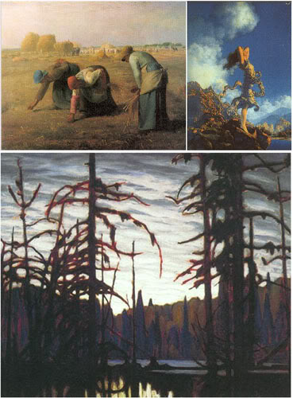

2007-04-10 01:12:22
En Plein Air
The last few years have seen an amazing improvement in the fundamentals of shading. We could summarize these improvements in general as reduction of artifacts and richness of rendering. Reduction of artifacts has improved through tesselation, filtering, and depth and transparency rendering. Richness has increased through higher geometry and texture throughput, and increases in shader program length allowing for a dramatic increase in the number of lights that can be computed. Shading is fundamentally concerned with the appearances of surfaces. Moving beyond Surfaces There's a completely different way of looking at the rendering of a scene. This method is common in landscape painting and matte painting in film. It is the notion of painting the air between the surfaces instead of the surfaces themselves. This technique became well known with the advent of the en plein air painters who advocated taking paint and canvas outside to paint from nature. Amusingly, this advance in painting was brought about by another technological revolution: the availability of paint in tubes supplanting the previous paradigm of artists mixing paints from powders, oils, and eggwhites! The values of the surfaces themselves are not represented in these paintings, but rather the interaction of light with the intervening medium. As long as rendering technologies remain focused on surfaces, these well understood properties of beautiful images can only be indirectly approximated, using imperfect tricks such as adding a fog term to a surface shader. A powerful compositing pipeline will be required to pull off a real time engine which can render participating media with light. Multiple layers must be individually rendered, with specific post processing between every pass. Partitioning the scene in depth, and the management of techniques such as scrims and a great variety of full screen post processes must be mastered. Avoiding artifacts between layers is a challenge here.  For further inspiration, Dan Curry talks about rendering with light instead of surfaces roughly half way through a fxguide podcast, available here.
CG/rendering